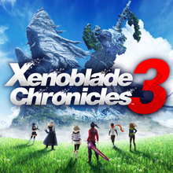

Xenoblade Chronicles 3 is a 2022 action role-playing game developed by Monolith Soft and published by Nintendo for the Nintendo Switch. It is an installment in the open-world Xenoblade Chronicles series, itself a part of the larger Xeno franchise. Xenoblade Chronicles 3 depicts the futures of the worlds featured in Xenoblade Chronicles (2010) and Xenoblade Chronicles 2 (2017) and concludes the trilogy's narrative.
The development team wanted to develop a story-driven game in the style of the first two entries in the series, while featuring content and combat gameplay from previous Xeno entries. Like the first two entries, the game was localized by Nintendo of Europe. The gameplay combines elements from the first and second entries.
